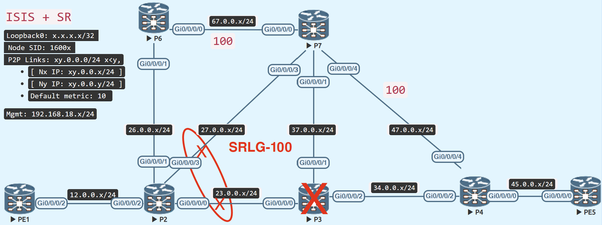

TI-LFA Node + SRLG Protection

Enabling Node + SRLG protection on P2 in the aforementioned architecture would cause it to avoid the SRLG connections as well as the P3 node for its backup route to the destination.
Because SRLG is already present from the previous step, enable node protection.
Configuration
Verify
P2 now computes a backup route that avoids the SRLG connections, so it travels to P6 - P7 and avoids P3 owing to node protection, so it uses P7 - P4.
P6 is located in P-space (or P-node) (P2 can send the traffic to P6 without any risk of flowing it via P2 – P3)
P7 is located in Q-space (or Q-node) (P7 can send the traffic to the destination without any risk of flowing via P2 –P3)
P4 is located in Q-space (or Q-node) (P4 can send the traffic to the destination without any risk of flowing via P2 – P3)
Because the post-convergence path route has a high metric, P2 generates a backup route, forcing traffic to take the high metric connections.
The backup route, on the other hand, now has three labels, whereas TI-LFA only supports two labels. As a result, the SR auto-tunnel is initiated as a backup path.
RP/0/RP0/CPU0:P2(config)#do sh isis fast-reroute 5.5.5.5/32 detail
Wed Feb 1 09:47:46.311 UTC
L2 5.5.5.5/32 [30/115] Label: 16005, medium priority
Installed Feb 01 09:47:43.868 for 00:00:03
via 23.0.0.3, GigabitEthernet0/0/0/0, Label: 16005, P3, SRGB Base: 16000, Weight: 0
Backup path: TI-LFA (node+srlg), via 26.0.0.6, GigabitEthernet0/0/0/1 P6, SRGB Base: 16000, Weight: 0, Metric: 220
Backup tunnel: tunnel-te32772
P node: P6.00 [6.6.6.6], Label: ImpNull
Q node: P7.00 [7.7.7.7], Label: 24019
Q node: P4.00 [4.4.4.4], Label: 24014
Prefix label: 16005
Backup-src: PE5.00
P: No, TM: 220, LC: No, NP: Yes, D: No, SRLG: Yes
src PE5.00-00, 5.5.5.5, prefix-SID index 5, R:0 N:1 P:0 E:0 V:0 L:0, Alg:0
RP/0/RP0/CPU0:P2(config)#
RP/0/RP0/CPU0:P2(config)#do sh cef 5.5.5.5/32
Wed Feb 1 09:48:34.746 UTC
5.5.5.5/32, version 1247, labeled SR, internal 0x1000001 0x8310 (ptr 0xe727de0) [1], 0x600 (0xe190578), 0xa28 (0xf55a020)
Updated Feb 1 09:47:43.873
remote adjacency to GigabitEthernet0/0/0/0
Prefix Len 32, traffic index 0, precedence n/a, priority 1
gateway array (0xdffa100) reference count 3, flags 0x500068, source rib (7), 1 backups
[2 type 5 flags 0x8401 (0xeb74428) ext 0x0 (0x0)]
LW-LDI[type=5, refc=3, ptr=0xe190578, sh-ldi=0xeb74428]
gateway array update type-time 1 Feb 1 09:47:43.873
LDI Update time Feb 1 09:47:43.873
LW-LDI-TS Feb 1 09:47:43.873
via 0.0.0.0/32, tunnel-te32772, 9 dependencies, weight 0, class 0, backup (Local-LFA) [flags 0x300]
path-idx 0 NHID 0x0 [0xf399e70 0x0]
next hop 0.0.0.0/32
local adjacency
local label 16005 labels imposed {16005}
via 23.0.0.3/32, GigabitEthernet0/0/0/0, 8 dependencies, weight 0, class 0, protected [flags 0x400]
path-idx 1 bkup-idx 0 NHID 0x0 [0xdda6180 0x0]
next hop 23.0.0.3/32
local label 16005 labels imposed {16005}
Load distribution: 0 (refcount 2)
Hash OK Interface Address
0 Y GigabitEthernet0/0/0/0 remote
RP/0/RP0/CPU0:P2(config)#
RP/0/RP0/CPU0:P2(config)#do sh mpls traffic-eng tunnels 32772
Wed Feb 1 09:52:05.595 UTC
Name: tunnel-te32772 Destination: 0.0.0.0 Ifhandle:0x4c (auto-tunnel for ISIS IGP)
Signalled-Name: auto_P2_t32772
Status:
Admin: up Oper: up Path: valid Signalling: connected
path option (_te32772), preference 10, (verbatim Segment-Routing) type explicit (_te32772) (Basis for Setup)
G-PID: 0x0800 (derived from egress interface properties)
Bandwidth Requested: 0 kbps CT0
Creation Time: Wed Feb 1 09:47:43 2023 (00:04:22 ago)
Config Parameters:
Bandwidth: 0 kbps (CT0) Priority: 7 7 Affinity: 0x0/0xffff
Metric Type: TE (global)
Path Selection:
Tiebreaker: Min-fill (default)
Protection: any (default)
Hop-limit: disabled
Cost-limit: disabled
Delay-limit: disabled
Delay-measurement: disabled
Path-invalidation timeout: 10000 msec (default), Action: Tear (default)
AutoRoute: disabled LockDown: disabled Policy class: not set
Forward class: 0 (not enabled)
Forwarding-Adjacency: disabled
Autoroute Destinations: 0
Loadshare: 0 equal loadshares
Auto-bw: disabled
Auto-Capacity: Disabled:
Path Protection: Not Enabled
BFD Fast Detection: Disabled
Reoptimization after affinity failure: Enabled
SRLG discovery: Disabled
History:
Tunnel has been up for: 00:04:22 (since Wed Feb 01 09:47:43 UTC 2023)
Current LSP:
Uptime: 00:04:22 (since Wed Feb 01 09:47:43 UTC 2023)
Segment-Routing Path Info (IGP information is not used)
Segment0[First Hop]: 26.0.0.6, Label: -
Segment1[ - ]: Label: 24019
Segment2[ - ]: Label: 24014
Displayed 1 (of 1) heads, 0 (of 0) midpoints, 0 (of 0) tails
Displayed 1 up, 0 down, 0 recovering, 0 recovered heads
RP/0/RP0/CPU0:P2(config)#